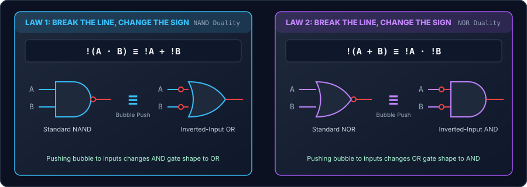
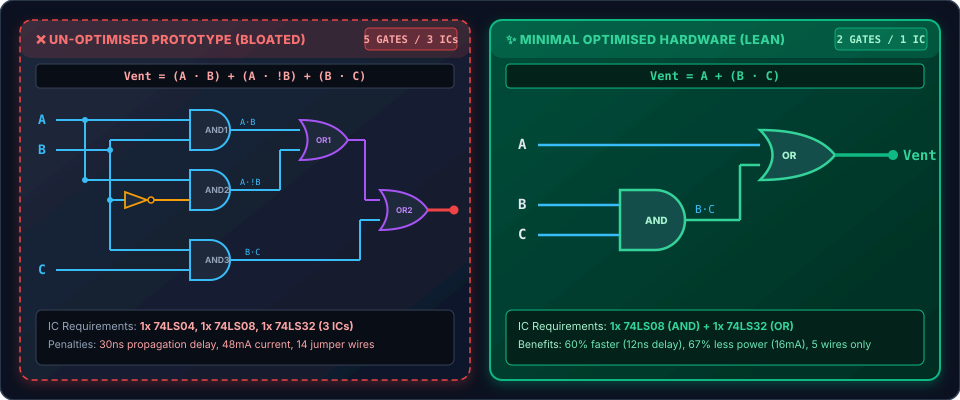
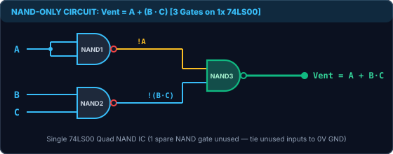
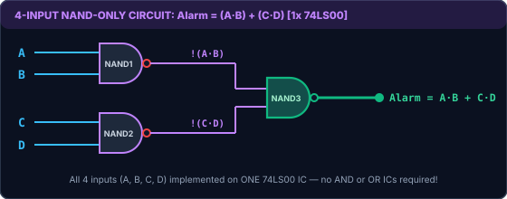

Boolean Algebra: “Can You Make It Simpler?”
Reduce circuit complexity, cut gate count, and verify mathematical equivalence between bloated prototypes and lean production hardware.
- Apply Boolean Laws: Identity, complement, distributive, and absorption rules to algebraic logic.
- De Morgan’s Duality: Transform inverted gate configurations using $\overline{A \cdot B} = \overline{A} + \overline{B}$.
- Circuit Reduction: Redesign a multi-IC bloated prototype into minimal hardware with identical behavior.
- Hardware Verification: Prove 100% truth-table equivalence in Multisim and on physical breadboard.
“Our prototype team built a working chemical reactor vent controller, but it uses 5 gates across 3 separate TTL ICs. Board space is full and BOM costs are too high. Redesign this circuit to its absolute minimum gate count without altering safety logic!”
Engineering Toolbox: Prior Recall
In a 14-pin 74LS-series logic IC (such as 74LS08 AND or 74LS32 OR), what happens if an unused gate input is left completely disconnected (open-circuit)?
Which standard Boolean expression represents the output of a 2-input AND gate feeding into an OR gate along with input $C$?
Every redundant logic gate increases PCB surface area, adds copper traces, consumes continuous quiescent supply current (~16mA per 74LS package), and introduces ~10ns of signal propagation delay. Professional engineers never build un-simplified circuits!
Video Masterclass: Boolean Logic & Minimisation
Any logical proposition can be evaluated using purely binary algebraic variables (0 = FALSE, 1 = TRUE). In electronics, this directly matches voltage rails ($0\,\text{V}$ and $+5\,\text{V}$).
A circuit built with 6 gates can often be simplified to 2 gates performing the exact same function. Fewer gates mean fewer ICs, lower power dissipation, and higher reliability.
A simplified circuit is only valid if its truth table matches the original specification across every single input combination.
1. What is Boolean Algebra?
Unlike ordinary algebra (where $x = 2$ or $x = 5$), Boolean variables can only be $0$ or $1$. In digital electronics, $0 = \text{LOW (0V / FALSE)}$ and $1 = \text{HIGH (+5V / TRUE)}$. Every digital circuit can be written as a mathematical equation using three basic operations:
- First, AND inputs $A$ and $B$ together ($A \cdot B$).
- Next, OR that result with input $C$.
- Notice: Boolean algebra lets us describe a complete truth table in one short equation!
Check every row: the output is $1$ whenever $C=1$, OR when both $A=1$ and $B=1$.
| $A$ | $B$ | $C$ | $A \cdot B$ | $\text{Output}$ |
|---|---|---|---|---|
| 0 | 0 | 0 | 0 | 0 |
| 0 | 0 | 1 | 0 | 1 |
| 0 | 1 | 0 | 0 | 0 |
| 0 | 1 | 1 | 0 | 1 |
| 1 | 0 | 0 | 0 | 0 |
| 1 | 0 | 1 | 0 | 1 |
| 1 | 1 | 0 | 1 | 1 |
| 1 | 1 | 1 | 1 | 1 |
Boolean Algebra Laws & Worked Example
| Law | OR Form | AND Form |
|---|---|---|
| Identity | $A + 0 = A$ | $A \cdot 1 = A$ |
| Null | $A + 1 = 1$ | $A \cdot 0 = 0$ |
| Idempotent | $A + A = A$ | $A \cdot A = A$ |
| Complement ⚡ | $A + \overline{A} = 1$ | $A \cdot \overline{A} = 0$ |
| Absorption ✂️ | $A + A\cdot B = A$ | $A(A + B) = A$ |
$$\text{Output} = A \cdot (B + \overline{B})$$
$$\text{Output} = A \cdot 1$$
$$\text{Output} = A$$
What have we achieved? 2 AND gates, 1 OR gate, and 1 NOT gate simplify to a direct wire from $A$ to the output!
Boolean Algebra: More Step-by-Step Examples
$$\text{Output} = A \cdot (1 + B + C)$$
$$\text{Output} = A \cdot 1$$
$$\text{Output} = A$$
Result: Whenever $A = 1$, the whole OR expression is already $1$, so $B$ and $C$ never change the output!
$$= (A \cdot A) + (A \cdot \overline{B}) + (B \cdot A) + (B \cdot \overline{B})$$
$$= A + A \cdot (\overline{B} + B) + 0 = A + A \cdot (1)$$
$$\text{Output} = A$$
Result: 2 OR gates, 1 AND gate, and 1 NOT gate simplify cleanly to a single wire from $A$!
2. De Morgan’s Theorems & Truth Table Proof
| A | B | $A\cdot B$ | $\overline{A\cdot B}$ | $\overline{A}$ | $\overline{B}$ | $\overline{A}+\overline{B}$ |
|---|---|---|---|---|---|---|
| 0 | 0 | 0 | 1 | 1 | 1 | 1 |
| 0 | 1 | 0 | 1 | 1 | 0 | 1 |
| 1 | 0 | 0 | 1 | 0 | 1 | 1 |
| 1 | 1 | 1 | 0 | 0 | 0 | 0 |

De Morgan’s Theorems: Step-by-Step Examples
$$Y = \overline{\overline{A}} \cdot \overline{B}$$
$$Y = A \cdot \overline{B}$$
Meaning: An active-low NOR gate with $A$ inverted behaves identically to $A \text{ AND } (\text{NOT } B)$.
$$Y = \overline{(A \cdot B)} \cdot \overline{\overline{C}}$$
$$Y = \overline{(A \cdot B)} \cdot C$$
$$Y = (\overline{A} + \overline{B}) \cdot C$$
Engineering Problem: Smart Workshop Ventilation Fan
We want to control an automatic Extractor Vent Fan ($\text{Vent} = 1$) in an electronics workshop using three simple inputs:
- $A$ — Manual Override Switch: $1 = \text{Pressed ON}$, $0 = \text{OFF}$
- $B$ — Window Closed Sensor: $1 = \text{Closed}$, $0 = \text{Open}$
- $C$ — High Temperature Sensor: $1 = \text{Too Hot}$, $0 = \text{Normal}$
1. Manual Override is ON AND the Window is Closed.
2. Manual Override is ON AND the Window is Open.
3. The Window is Closed AND the Workshop is Too Hot.
$$A \cdot B$$
$$A \cdot \overline{B}$$
$$B \cdot C$$
$$\text{Vent} = (A \cdot B) + (A \cdot \overline{B}) + (B \cdot C)$$
Simplification Walkthrough: Reducing the Expression
Both $(A \cdot B)$ and $(A \cdot \overline{B})$ contain $A$, so we factor $A$ outside the bracket.
Logic Circuit Comparison: Bloated vs. Lean

Using ONLY NAND Gates: $\text{Vent} = A + (B \cdot C)$
$$\text{Vent} = A + (B \cdot C)$$
$$\text{Vent} = \overline{\overline{A + (B \cdot C)}}$$
$$\text{Vent} = \overline{\overline{A} \cdot \overline{(B \cdot C)}}$$

• NAND 2: Inputs $B, C$ → outputs $\overline{B \cdot C}$.
• NAND 3: Inputs $\overline{A}$ & $\overline{B \cdot C}$ → outputs $A + (B \cdot C)$.
Repeat with 4 Inputs: $\text{Alarm} = (A \cdot B) + (C \cdot D)$
Rule: Alarm sounds if (Sensor $A$ AND Guard $B$ trip) OR (Temp $C$ AND Pressure $D$ trip):
$$\text{Alarm} = (A \cdot B) + (C \cdot D)$$
$$\text{Alarm} = \overline{\overline{(A \cdot B) + (C \cdot D)}}$$
$$\text{Alarm} = \overline{\overline{(A \cdot B)} \cdot \overline{(C \cdot D)}}$$

• NAND 2: Inputs $C, D$ → outputs $\overline{C \cdot D}$.
• NAND 3: Takes $\overline{A \cdot B}$ & $\overline{C \cdot D}$ → outputs $(A \cdot B) + (C \cdot D)$ on 1x 74LS00 IC!
Interactive Logic Reducer Workbench
Gate Count & Hardware Audit
| Metric | Bloated | Lean (AND+OR) | NAND-Only |
|---|---|---|---|
| Total Logic Gates | 5 gates | 2 gates (-60%) | 3 gates (-40%) |
| IC Packages | 3 ICs (04, 08, 32) | 2 ICs (08, 32) | 1 IC (74LS00) |
| Supply Current | ~48 mA | ~30 mA (-38%) | ~16 mA (-67%) |
| Propagation Delay | ~30 ns (3 stages) | ~20 ns (2 stages) | ~18 ns (2 stages) |
| Jumper Wires | 14 wires | 7 wires | 6 wires (1 IC) |
Consult the official TTL pinouts to prepare for simulation and bench assembly:
Tinkercad / Multisim Simulation: Build & Compare
- Setup Input Switches: Place 3 SPDT switches or DIP switches ($+5\,\text{V}$ / $0\,\text{V}$) for inputs $A$, $B$, and $C$.
- Build Original Circuit: Wire $(A \cdot B) + (A \cdot \overline{B}) + (B \cdot C)$ using
74LS04,74LS08, and74LS32into a Red LED (5 gates / 3 ICs). - Build Simplified Circuit: Wire $A + (B \cdot C)$ using
74LS08and74LS32into a Green LED (2 gates / 2 ICs). - Test & Compare Gate Count: Cycle all 8 input states ($000_2 \to 111_2$). Confirm both LEDs match in every row while counting the ICs and gates saved.
| A | B | C | Bloated (Red) | Lean (Green) | Status |
|---|---|---|---|---|---|
| 0 | 0 | 0 | 0 | 0 | MATCH |
| 0 | 0 | 1 | 0 | 0 | MATCH |
| 0 | 1 | 0 | 0 | 0 | MATCH |
| 0 | 1 | 1 | 1 | 1 | MATCH |
| 1 | 0 | 0 | 1 | 1 | MATCH |
| 1 | 0 | 1 | 1 | 1 | MATCH |
| 1 | 1 | 0 | 1 | 1 | MATCH |
| 1 | 1 | 1 | 1 | 1 | MATCH |
Physical Breadboard Build
🔌 Assemble the circuits on the breadboard: Unoptimised, Simplified, and NAND-Only.
74LS04, 74LS08, 74LS3274LS08 + 74LS3274LS00 onlyCircuit Fault-Finding & Diagnostics
Measure directly across Pin 14 ($+5\,\text{V}$) and Pin 7 ($0\,\text{V}$) on both ICs with your DMM. Breadboard power split rails often lack center jumpers!
Never leave an active input floating when testing Logic 0. Connect input wires securely to the $0\,\text{V}$ rail. Disconnected TTL inputs drift to Logic 1!
Probe 74LS08 Pin 3 ($B \cdot C$) with your DMM before checking the final OR gate output. Verify that the intermediate product term behaves correctly.
Confirm the indicator LED anode (longer leg) connects to the $330\,\Omega$ current-limiting resistor and the cathode connects directly to $0\,\text{V}$ Ground.
Ensure the semi-circular notch on the IC faces to the LEFT. Pin 1 is bottom-left, Pin 7 bottom-right, Pin 8 top-right, and Pin 14 top-left.
Do not stop at testing one condition. Systematically test all 8 input combinations ($000_2$ to $111_2$) to prove zero unexpected glitches occur.
Engineer Exit Ticket: Week 3
Simplify the expression: $$Z = X + (X \cdot Y)$$
According to De Morgan's theorem, what is the equivalent dual form of: $$\overline{C + D}$$
Document your un-optimised schematic, step-by-step algebraic working, minimised schematic, Multisim simulation capture, and breadboard verification photo in your engineering portfolio.
Practice Questions: Boolean Simplification (Set 1)
Simplify: $Y = (A \cdot 1) + (B \cdot 0)$
Simplify: $Y = \overline{A}\cdot B + A\cdot B$
Simplify: $Y = C + (C \cdot D)$
Simplify: $Y = A\cdot B\cdot C + A\cdot B\cdot \overline{C}$
Simplify: $Y = A \cdot (A + B)$
Simplify: $Y = A + \overline{A} \cdot B$
Practice Questions: De Morgan’s & NAND Logic (Set 2)
Rewrite using De Morgan: $Y = \overline{A \cdot \overline{B}}$
Rewrite using De Morgan: $Y = \overline{\overline{A} + \overline{B}}$
How do you make a NOT gate ($\overline{A}$) using a 2-input NAND gate?
Which NAND-only form equals $Y = A + B$?
How many 74LS00 ICs are needed to build $Y = (A\cdot B) + (C\cdot D)$ using NAND-only logic?
Simplify: $Y = \overline{(A + B) \cdot C}$